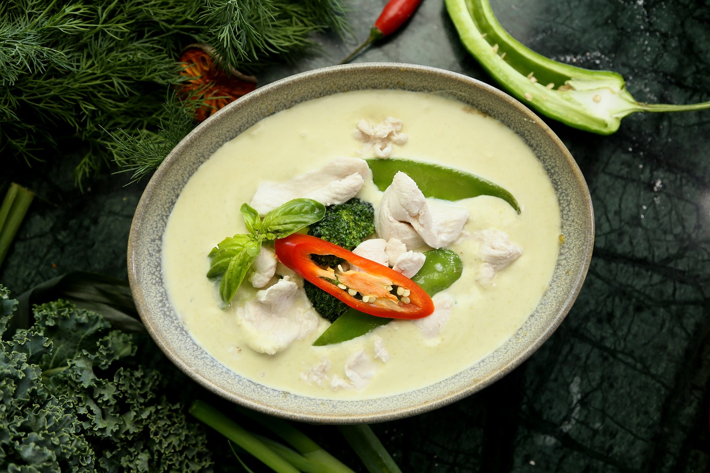

Thai Green Curry
Home

Description
An authentic recipe for Thai green curry with chicken
- one of the best known dishes in Thai cuisine.
Ingredients
- Thai basil
- Bamboo shoots, canned
- Red bell pepper
- Green curry paste, homemade or store bought (e.g., Aroy-D or Maeploy).
- Makrut lime leaves
- Full fat coconut milk (Aroy-D)
- Fish sauce
- Palm sugar or light brown sugar
- Boneless skinless chicken thighs
- Chicken stock, unsalted
Steps
- Optional step: Pound green curry paste
and Thai basil leaves for an extra vibrant colour.
- Get the paste as fine as possible.
- Reduce the coconut milk until very thick.
- Add the curry paste and saute for a few minutes.
- Toss chicken with the curry paste.
- Add coconut milk.
- Add chicken stock.
- Add makrut lime leaves.
- Add fish sauce and palm sugar.
- Simmer for 10-15 minutes until the chicken is fork tender.
- Add bamboo shoots and cook for a minute
until the curry comes back to a boil.
- Stir in red bell pepper and turn off the heat.
- Add Thai basil and stir just until wilted.
- The green curry is now ready to serve with jasmine rice!
Recipe source: Hot Thai Kitchen